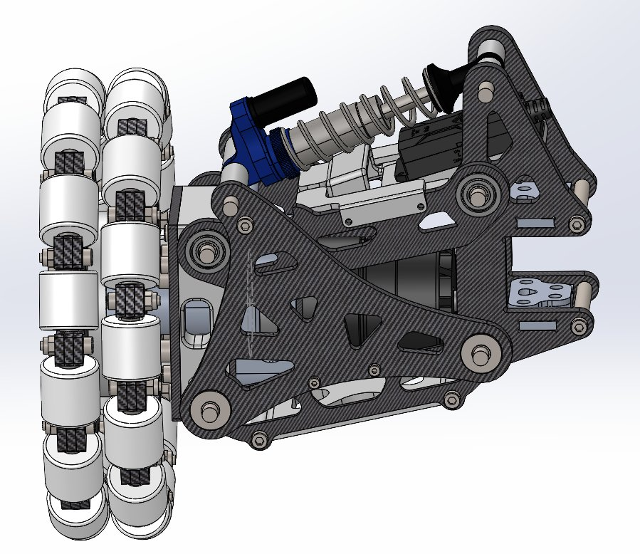
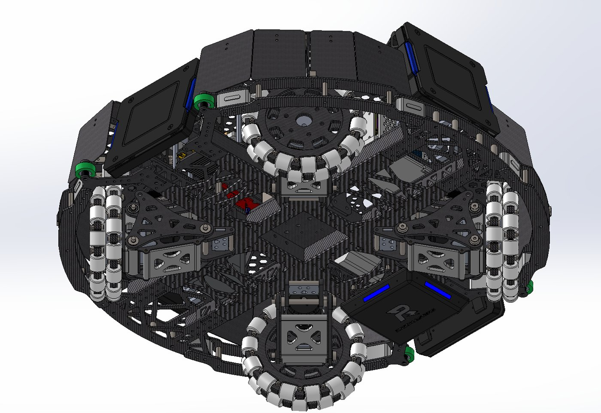
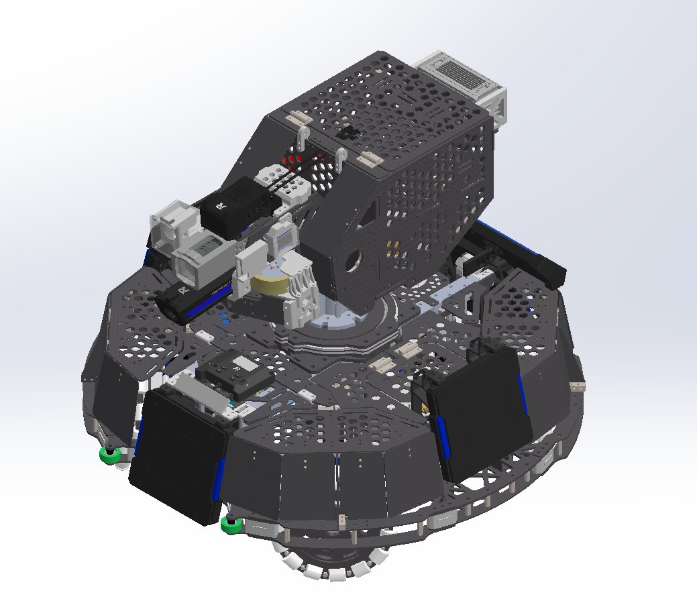
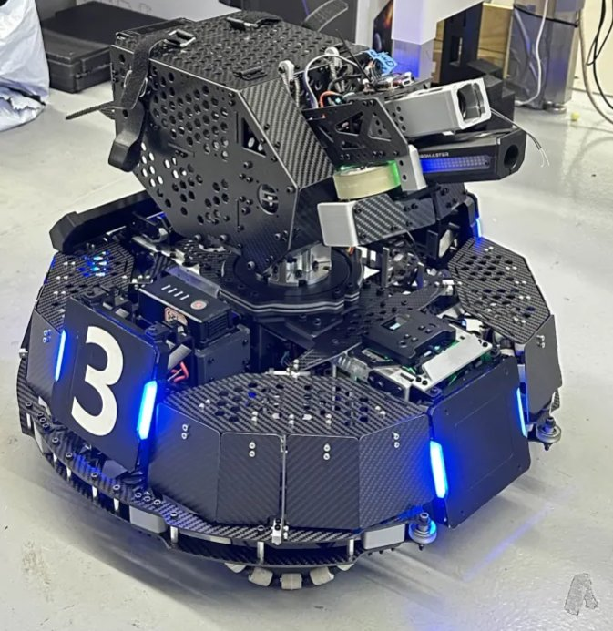

RoboGrinder: Holonomic Chassis & Suspension
RoboMaster Design Team at Virginia Tech
August 2025 – Present
- Designed a custom holonomic chassis with built-in suspension to meet weight and load constraints while keeping the robot stable and controllable on uneven terrain.
- Modeled 20+ sheet metal and extruded parts in SolidWorks for the robot's mechanical systems with DFM in mind.
- Placed 2nd in North America at RoboMaster 2026 with a 50-person team of mechanical, electrical, and software students.



